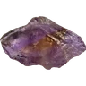
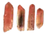
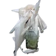
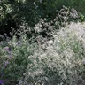
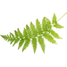
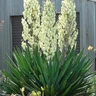

Correspondence Grimoire
Purification

AmetrineApache Tear
Apricot QuartzAquamarine
ScoleciteSelenite
Baby's Breath
Fern
YuccaEmotional Purification
Plants
Rue, Fairy Wand, Lotus
Minerals
Malachite
Inner Purification
Plants
Elder, Walnut, Ginger, Blackberry/Bramble, Borage, Broom, Columbine, Dandelion, Heather
Mental Purification
Minerals
Hematite, Lapis Lazuli, Malachite
Ritual Purification
Plants
Laurel, Lavender, Sage, Frankincense, Myrrh
Spiritual Purification
Astrology
Sun
Runes
Elhaz
Elements
Fire, Water
Directions
North
Colors
Silver, White
Plants
Juniper, Laurel, Cinnamon, Cedar, Hawthorn, Magnolia, Carnation (pink, red), Gardenia, Iris, Jasmine (white), Lily (white), Primrose, Rose (red, white), Violet (white), Frankincense, Grain (wheat), Mistletoe, Water Lily
Minerals
Lapis Lazuli, Silver, Agate, Diamond, Pearl
Entities
Athena, Demeter, Kore, Lakshmi, Sarasvati, Sekhmet, Agni, Balder, Shiva
Animals
Albatross, Deer, Hummingbird, Unicorn
The act of removing impurities, negative energy, stagnation, and unwanted influences from a person, place, object, or situation. Purification is one of the most essential and frequently performed actions in all magickal practice. It prepares the stage for every other working.
Why Purify?
Everything accumulates energy over time. A new tool from a shop carries the energy of everyone who handled it. A room where an argument took place holds residual tension. Even your own energy field picks up influences from the people and places you encounter daily. Purification strips away these accumulated layers, returning the target to a neutral, clean state that is ready to receive fresh intention.
Purification is also the essential first step in ritual preparation. Cleansing yourself, your tools, and your space before spellwork ensures that lingering energies do not interfere with your intention.
Common Methods of Purification
Different methods suit different situations. Always choose a technique that will not physically damage the object or harm the person being cleansed:
- Smoke cleansing involves passing an object through incense smoke or the smoke of a smudge bundle. The smoke carries away stagnant energy
- Water cleansing involves sprinkling, aspersing, or submerging in ritually prepared water such as Holy Water, Moon Water, or salt water. Only suitable for items that can safely withstand moisture
- Salt is a powerful absorber of negative energy. Items can be placed on or buried in salt, or salt can be sprinkled around a space
- Sound from singing bowls, bells, clapping, drumming, or chanting breaks up stagnant energy through vibration. Effective for large spaces and situations where smoke or water would be impractical
- Sunlight and Moonlight can purify objects placed in direct light for a period of time. Sunlight purifies with active, fiery energy while moonlight purifies with gentle, receptive energy
- Earth burial allows the earth to absorb and neutralize unwanted energy from items buried in soil
- Breath involves deliberately breathing across an object with the intention to cleanse. Simple, requires no tools, and can be done anywhere
Purification in Ritual Work
Before beginning any magickal working, most practitioners perform some form of purification. This might be as simple as washing your hands with intention, or as elaborate as a full ritual bath with herbs and oils. The key is not the complexity of the method but the clarity of your intention to cleanse.
After workings, especially intense or emotionally heavy ones, purification helps you return to your baseline state. Ground first to release excess energy, then cleanse to clear any residual influences.
The Fire Element Connection
Fire and Water both share strong ties to purification. Fire purifies through transformation, burning away impurities and reducing things to their essence. Water purifies through washing, dissolving and carrying away what no longer serves. The method you choose often depends on whether the situation calls for fire's decisive intensity or water's gentle persistence.
Regular Cleansing Practice
Purification is not a one time event. Many practitioners build regular cleansing into their routines: a weekly smoke cleanse of their home, a monthly ritual bath, or a daily visualization of unwanted energy draining away. Consistent purification prevents the buildup of stagnant energy and keeps your practice space vibrant and clear.
🔎 Specific Correspondences
- Blue, royal blue specifically
- Rose, white rose specifically
 Violet, white violet specifically
Violet, white violet specifically- Palm, specifically
 Coconut (coconut palm) and
Coconut (coconut palm) and  Dragon's Blood (dragon's blood palm)
Dragon's Blood (dragon's blood palm) - Chamomile, tagged as both
 German Chamomile and
German Chamomile and  Roman Chamomile
Roman Chamomile